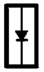

Diodes
Diodes:

A rectifier diode works like a one way valve. It allows current to flow only in the direction of the arrow.
Diodes:
A Zener diode blocks reverse current at normal voltages just like a rectifier diode. At high voltages, however, a Zener diode allows current to flow in reverse.